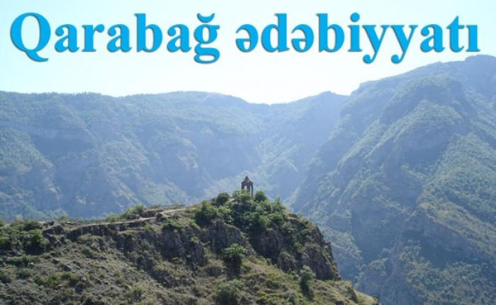
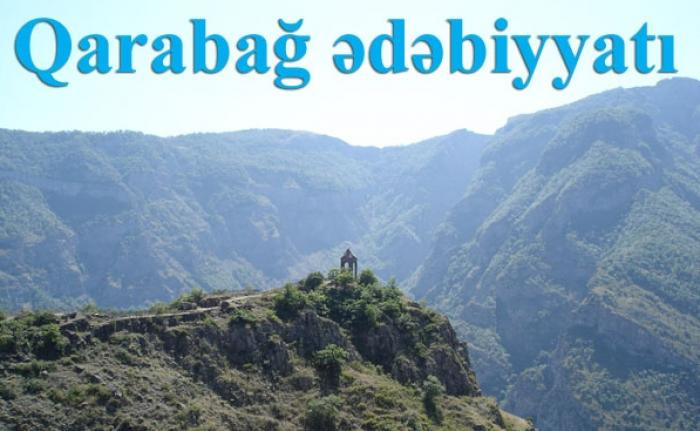

Qarabağ ədəbiyyatı
Orta və son orta əsrlər Qarabağ ədəbiyyatı haqqında bunları deyə bilərik. Azərbaycan-türk mədəniyyətində, əbədiyyatında bir sıra faktların ilkinliyi, ilk başlanğıcı, bünövrəsi etibarilə Qarabağ ədəbi mühiti ilə bağlı olduğunu müşahidə edirik. Qarabağ ədəbi mühitində, yazılı ədəbiyyatda bir fakt kimi hələlik elmə məlum olan ilk qarabağlı şairin adı VII əsrdə yaşayıb-yaratmış Davdağın adıdır. Onun bu günə gəlib çatan yeganə şeri Alban-Partav-Bərdə çarı Cavanşirin erməni keşişlərinin fətvası ilə qətlinə yazdığı və bizə tərcümədə gəlib çatmış ağı janrında kamil şeir mətnidir. Bu mətnin məzmunu, ideya-estetik xətti və üslııbu onun Cavanşir kimi bir sərkərdəyə, hökmdara ağı, şeir həsr etməsi sübut edir ki. Davdağ dövrünün qüdrətli, tanınmış söz sənətkarı olmuşdur. X əsrdə yaşayıb-yaratmış, ərəb dilli Azərbaycan ədəbiyyatının yaradıcılıarından olmuş Əbu Bəkir Əhraəd əl-Bərdəi, Məkki ibn Əhməd Bərdəi, Xətib Bağdadi Məhəmməd Əl-Bərdəi, Əhməd ibn əl-Hüseyn Əbu Səid əl Bərdəi, Əbu Əli əl-Bərdəi, Səid ibn əl-Qasim əl Bərdəi, Əbu Səd ibn Yəhya əl-Bərdəi (faktlar M. Mahmudovun "Ərəbcə yazmış azərbaycanlı şair və ədiblər" (VII-XII əsərlər) kitabından götürülübdür, B. , Elm, 1983) təkcə Azərbaycanda deyil, bütün İslam dünyasında məşhur alimlərdən və dövrünün fılosof şairlərindən olmuşlar. Hələ bu təkcə X əsrin məlum faktlarındandır. X-XI əsrlərdə Qarabağda müsəlman Şərqinin görkəmli mütəfəkirləri - Səid Əmirül Bərdəyi, Məhəmməd Abdulla Bərdəyi kimi mütəfəkkirlər yaşayıb. XI əsrin qarabağlı şairi Məsud Namidar "İncil"i ərəb, fars və türk dillərinə tərcümə etməsi ilə məşhurlaşıb. XII əsr Azərbaycan poeziyasının ən qüdrətli simalarından biri qarabağlı Mücirəddin Beyləqani olmuşdur və Xosrov Dəhləvi onun sənətkarlığını Xaqani Şirvaninin sənətkarlığından üstün tutur. Zəld ibn Hüseyn ibn Ömər Beyləqani də Mücirəddinin müasiri olmuş, fılosof olaraq yüksək elmi səviyyəyə çatmış, Dəməşqə getıniş, orada bədii fikrin, fəlsəfı elmin apancısı kimi məşhur olmuş, bir sıra yüksək səviyyəli bədii əsərlər yaratmışdır. XIII əsrdən etibarən, obyektiv tarixi gerçəkliyin təsiri altında Azərbaycan torpaqlarında əsasən ərəb və fars dillərində yaradılan Azərbaycan ədəbiyyatında doğma dildə yazan qarabağlı şair və sənətkarların sayının get-gedə artdığını görürük. XIII yüzilliyin epik poeziya örnəkləri arasında anonim "Dastani-Əhməd Hərami" poemasının adını çəkmək lazımdır. Bu əsərdə İslam dininin yüksək humanist dəyərləri bədii təqdimat obyektinə çevrilir, müəllif oxucunu İslam şəriətinin əsasını təşkil edən xeyirə, ədalətə, insansevərliyə, düzlüyə, insaf və etiqada dəvət edir, insana yaraşmayan mənfi sifətlərdən çəkindirir. Orta əsrlərin Avropa cəngavər romanlarından fərqli olaraq, burada əsas məqsəd hadisələrin cəlbediciliyini təmin etmək deyil, poemanın süjetində duran əxlaqi ideyanın oxucuya daha təsirli şəkildə çatdırılmasıdır. XIV əsrdə Tuti Abdulla Qarabaği adlı çox ilhamlı bir şair fəaliyyət göstərmiş, əsərlərindən hələlik əldə olmasa da, "Həqiqətüs-şüəra" da və başqa mənbələrdə hörmətlə adı çəkilir. XV əsrdə Qarabağlı Şeyx İbrahim ibn Məhəmməd Şəhabəddin Bərdəi dövrünün Şeyx tituluna yüksəlmiş, Gülşəni təxəllüsü ilə ədəbiyyat aləmində olduqca məşhur olmuşdur. Yusif ibn Məhəmmədşahi Qarabaği XVI-XVII əsrlərdə yaşayıb-yaratınış, dövrünün görkəmli alimlərindən olmuş, Səmərqəndə Hüseyniyyə xanəgahına getmiş və Mövlanə Yusif təbəqəsinə yüksəlmişdir. Bütün bunlar tarixin saralmış küləklərə sovrulmuş səhifələrindən bu günümüzə gəlib çatan, zənginliyi ilə qibtə doğuran mədəniyyətimizin qəlpələridir, zərrələridir, cizgiləridir. Qarabağ əbədi mühiti həmişə Azərbaycan mədəniyyətinə və ədəbiyyatına yaxşı mənada fon vermiş, onun ən qüdrətli səhifələrini yaratmış, istiqamətləndirmişdir, XVIII-XIX əsr Qarabağ ədəbi mühiti ən yeni ideya-estetik xətti, ədəbi-üslubi meylləri və zənginliyi ilə təkcə Azərbaycanda deyil, bütün türk dünyasında eləcə də, Şərq ədəbiyyatında ön mövqelərə çıxır. XVI əsrdə yaşayıb-yaratmış, Şah İsmayıl Xətai sarayının doğmalarından olan, ustadlar-ustadı Aşıq Qurbani, XVIII əsrdə Mirmöhsün Ləmbərani Asəf, Aşıq Əli, Aşıq Valeh. Ziyadi Qarabaği və Molla Pənah Vaqifın adları çox mətləblərdən xəbər verir. XVI əsrin filosof-yazarı Məhəmməd Qarabağinin əsərləri Qahirə (Misir) kitabxanasında saxlanılır. XVI-XVII yüzilliklər Azərbaycan ədəbiyyatında həm də orta əsr məhəbbət və qəhrəmanlıq dastanlarının formalaşması dövrü kimi tanınır. Füzulinin yazılı poeziyada əldə etdiyi uğuru az qala eyni səviyyədə şifahi xalq yaradıcılığının Qurbani, Aşıq Abbas Tufarqanlı kimi nümayəndələrinin yaradıcılığında görürük. "Aşıq Qərib", "Abbas və Gülgəz", "Əsli və Kərəm" kimi mükəmməl məhəbbət dastanları bu dövrdə formalaşır və xalq sənətkarlarının repertuarına daxil olur. Hələ Şah İsmayıl Xətayi yaradıcılığından bizə məlum olan xalq şeiri şəkillərindən qoşma, gəraylı, varsağı, bayatı daha da təkmilləşir. XVIII əsrdə Pənahabad şəhərinin-Şuşanınn bünövrəsi qoyulandan sonra Qarabağ ədəbi mühiti Azərbaycan ədəbi-mədəni mühitinin ən qaynar mərkəzinə çevrildi və Naxçıvan, İrəvan, Gəncə, Şəki və b. xanlıqların, Gürcüstanın siyasi-ictimai hadisələrinin istiqamətini də Qarabağ xanlığı müəyyənlşdirməyə başladı və aralarında sıx əlaqələr oldu. Bu əlaqələr Qarabağ ədəbi mühitinin təsir dairəsini daha da genişləndirdi. Qarabağ ədəbi mühiti XVIII əsrdən başlayaraq Azərbaycan ədəbiyyatında ilk olaraq realist şerin əsasını qoyaraq, XIX əsrdə realizm ədəbi metodunun yaranmasma və möhkəmlənməsinə, inkişafına səbəb olmuşdur. XVII-XVIII əsrlərdə Azərbaycan ədəbiyyatı şifahi xalq yaradıcılığının əsasən aşıq nümayəndələrinin əsərlərinin təsiri altında canlı həyata, xalq dilinə daha da yaxınlaşır, Azərbaycan poeziyasında realizmə keçid dövrünün təməli qoyulmuş olur. Azərbaycan ədəbiyyatında yeni milli şeir məktəbinin əsası XVIII əsrdə Qarabağda Molla Pənah Vaqif tərəfindən qoyulub və Qasım bəy Zakir tərəfindən inkişaf etdirilib. Xüsusən Vaqif yaradıcılığı bu baxımdan müstəsna rol oynamışdır. O, yaratdığı sadə, realist, dünyəvi gözəl obrazları ilə klassik romantik sənət tipindən realizmə doğru iri bir addım atmış və özündən sonrakı ədəbiyyatın inkişaf istiqamətlərini müəyyənləşdirmişdir. Vaqif həm də öz dövrünün görkəmli siyasi xadimi olmuş, Qarabağ xanlığının xarici siyasətini uzun müddət müəyyənləşdirmişdir. XVIII əsr-Azərbaycan ədəbiyyatında orta əsrlərin son, yeni dövrün isə başlanğıc mərhələsi kimi keçid xarakteri daşıyır. XVIII əsrdə Qarabağ xanının qızı Ağa Bəyim ağa Tuti Şərqdə ən müdrik qadın kimi məşhurlaşmışdı və Qacar şahı Fətəli şah dövründə şahlıq diplomatiyasınm ən fəal istiqamətverici şəxslərindən idi və onun məşhur bayatısının vətənpərvərlik ruhu bu gün də öz ecazkar gücü ilə səslənməkdədir. Azərbaycan folklorunun mühüm janrlarından biri olan bayatı janrının vətəni də Qarabağ elləri olmuşdur. Bəlkə də, türk dünyasında ilk bayatı burada yaranmışdır və elə ona görə də Azərbaycanın digər rayonlarına nisbətən Qarabağda bayatı janrı daha geniş şəkildə yayılmışdır. İraqda, Bağdad civarlarında Kərkük türklərinin əsil-nəsilləri, soyları Bayat boyuna bağlı olduğundan, indinin özündə də, burada ən zəngin janrdır və Kərkük türklərinin bayatıları olduqca məşhurdur. XVI əsrin və bütün zamanların ən dahi sənətkarlan, əbədiyyət yolçusu Məhəmməd Füzulinin də əslən Bayat elindən olduğu hamıya məlumdur. XVII əsrin bayatı ustası da, Qarabağın Güləbird kəndindən (Laçın rayonu) Sarı Aşıq olmuşdur. XIX əsrdə Qarabağ ədəbiyyatı “qızıl dövrünə” qədəm qoyub, Şuşa Qafqazın mədəniyyət mərkəzinə çevrilib. Şuşalı rəssam, şair, alim Mir Möhsün Nəvvabın tərtib etdiyi "Tərkireyi-Nəvvab" əsərində bu şəhərdə yaşamış 100-dək ədibin adı çəkilir. Böyük şairə Xurşudbanu Natəvan, Aşıq Pəri, “Qarabağnamələr”in müəllifləri olan tarixçi yazarlar Mirzə Adıgözəl bəy, Mirzə Camal Cavanşir, Mirzə Mehdi Xəzani, Əhməd bəy Cavanşir və s. bu dövrün tanınmış simalarıdır. XIX əsrin əvvəllərində Azərbaycanın Rusiya imperiyasının tərkibinə daxil edilməsi ilə bütövlükdə Qarabağ mədəniyyətində olduğu kimi, Qarabağ ədəbiyyatında da qərbyönümlü meyllər olduqca güclənmişdir. Bunun təsiri altında ədəbiyyatda milli və realist-dünyəvi motivlər aparıcı mövqeyə çıxmışdır. Zakirin yaradıcılığında, həm də onunla çağdaş olan şairlərin əsərlərində Füzuli ənənələrinin də yeni səviyyədə davam etdirildiyi müşahidə olunur ki, bunun da ən böyük nümayəndələrindən biri Xurşud Banu Natəvandır (1830-1897). Şuşada fəaliyyət göstərən "Məclisi-üns" poetik məclisinə Xurşud Banu Natəvan, "Məclisi-fəramuşan"a ("Unudulmuşlar məclisi") isə Mirzə Möhsün Nəvvab başçılıq edirdi. Poetik məclislər arasında sıx əlaqə mövcud idi və şairlər bir-biri ilə yazışırdılar. Bütövlükdə XIX yüzilliyin ədəbiyyatı, Qarabağ ədəbi məktəbinin yeni yüksək mərhələsi sayılan XX yüzilliyin ədəbiyyatına keçid üçün möhkəm zəmin hazırlamışdır. M. F. Axundzadə ənənələrinin davamı ilə inkişaf edən maarifçi dramaturgiya Nəcəf bəy Vəzirovun (1854-1926) hələ XIX əsrin sonlarında qələmə aldığı komediyalar və "Müsibəti-Fəxrəddin" (1894) faciəsi, Əbdürrəhimbəy Haqverdiyevin (1870-1933) komediyaları və faciələri ilə Azərbaycan ədəbiyyatı daha da zənginləşdi. İlk Azərbaycan professional qadın aşığı olan Aşıq Pərini də Qarabağ yetişdirmişdir. Bu yazılı ədəbiyyatla folklorun qovuşuğunun kamil bir mərhələsində baş vermişdir. XIX əsrin sonu XX əsrin əvvəllərində Qarabağın yetişdirdiyi ən görkəmli nümayəndələrdən biri də dahi bəstəkar, Şərqdə ilk operanın banisi, böyük dramaturq, ilk liberetto müəllifi, musiqili komediya janrının yaradıcısı, qəzetçi, qüdrətli publisist, Azərbaycan himninin müəllifi Üzeyir Hacıbəylidir (Hacıbəyov). Ümumilikdə həmin dövr Qarabağ ədəbi mühitinin ən görkəmli nümayəndələrini belə sıralamaq olar: Yusif Vəzir Çəmənzəminli - ilk tarixi romanlar müəllifi (“İki od arasında” (“Qan içində”); “Qızlar bulağı” və s. ), yazıçı-etnoqraf, folklorşünas, diplomat Ceyhun bəy Hacıbəyli - yazıçı, publisist diplomat, folkorşünas (Parisdə ilk dəfə "Qarabağ folkloru" kitabını fransızca və orijinal mətnlərlə çap etdirmişdir); Əhməd bəy Ağayev - Azərbaycan dövlətçiliyinin ilk nəhəng, mogikan ideoloqlarından biri, yazıçı-publisist alim, qəzetçi, erməni terrorizminə qarşı döyüşən ilk türk "Difai" milli təşkilatının yaradıcısı; Firudin bəy Köçərli - ilk ədəbiyyat tarixçisi, maarifçisi, Qori və Qazax müəllimlər seminariyasınm müdiri; Süleyman Sani Axundov - ilk uşaq ədəbiyyatının yaradıcılarından biri, "Laçın yuvası" dramında Azəri mentalitetini bütövlüklə özündə cəmləyən ilk bəy obrazının yaradıcısı, ilk Milli Qəhrəman adı alan yazıçı-pedaqoq; Əbdürəhim bəy Haqverdiyev - ədəbiyyatımızda tarixi dram janrının banisi, ilk opera rejissoru və dirijoru, “Yeyərsən qaz ətini, görərsən ləzzətini” (1892) dramının və “Dağılan tifaq” (1896) “Bəxtsiz cavan” (1900) və “Pəri-cadu” (1901) faciələrinin, “Marallarım”, “Xortdanın cəhənnəm məktubları”, “Şeyx Şaban”, “Xəyalət”, “Ac həriflər”, "Ağa Məhəmməd şah Qacar" (1907) və sair əsərlərin müəllifidir. Qarabağ övladı kimi dünyaya göz açan bu sənət xadimləri sonradan Azərbaycan mədəniyyətinin və ədəbiyyatının ədəbi fikir korifeylərinə çevrildilər və bütün türk xalqının övladları kimi dəyərləndirildilər.
![]() 
